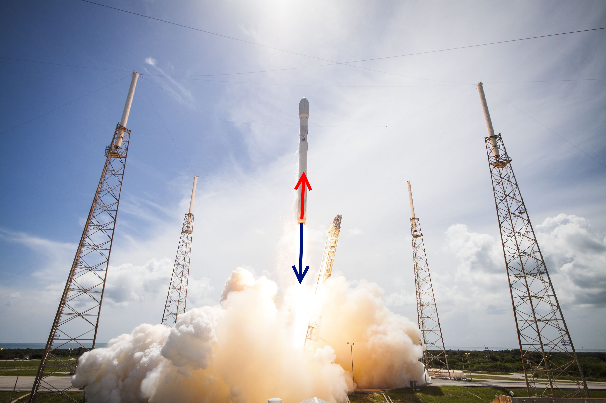
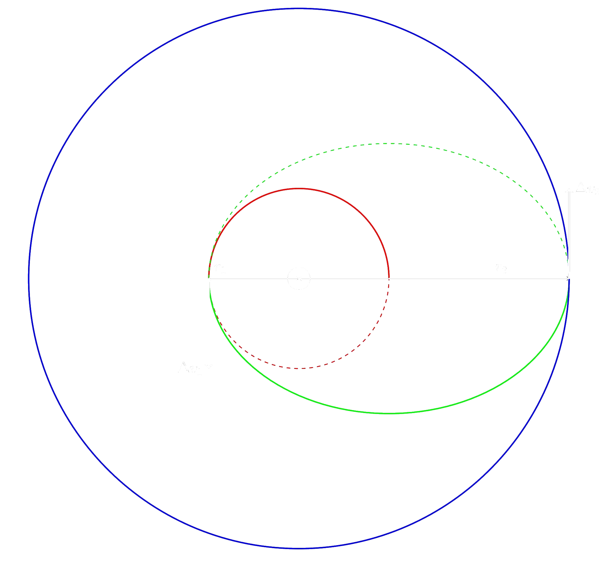

| Inhalt | |
| - | Pioniere der Raumfahrt |
| - | Raketeantrieb |
| - | Hohmann-Transfer |
| - | Lagrange-Punkte |
| - | Swing-By |
Konstantin Ziolkowski (1857-1935)
- inspieriert durch SciFi - schrieb selber Geschichten - erster Windkanal Russlands - Strahlruder - Kreiselsteuerung - Raketengleichung
Walter Hohmann (1880-1945)
- Hohmann-Transfer - machte sich Gedanken über die Rückkehr - wollte keine Waffen entwickeln
Robert Goddard (1882-1945)
- "Raketen können Nutzlasten auf den Mond bringen" - erfolgreicher Start einer Rakete mit flüssigen Treibstoff - wissenschaftliche Geräte - duchbrechen der Schallmauer
Hermann Oberth (1894-1989)
- höher als die Erdatmosphäre steigen - nicht auf die Erde zurückfallen - ungefährlich für den Mensch - Bau könnte sich lohnen
Wernher von Braun (1912-1977)
- Entwicklung des A4(V2)
{kind=link}
Wernher von Braun (1912-1977)
- Entwicklung des A4(V2) - wichtig für die amerikanische Raumfahrt
Rückstoßprinzip
Spezifischer Impuls
$I_{spez} = \frac{F_mt_b}{m}$| F-1 | $\quad$ | $2550\frac{m}{s}$ |
| Vulcain 2 | $\quad$ | $4207\frac{m}{s}$ |
| STS-Booster | $\quad$ | $2372,5\frac{m}{s}$ |
Raketengrundgleichung
$v(m) = v_g \cdot \ln \frac{m_0}{m}$Triebwerksarten
Chemisch
Feststoff
+ einfache Bauweise
+ wenige Fehler
+ niedriger Preis
+ hohe Schubkraft für kurze Zeit
- kann nicht gestoppt werden
- keine Schubkontrolle im Flug
Flüssigkeit
+ Schubregulierung
+ lange Brennzeit
+ wiederzündbar
+ leichtere Wiederverwendung
- Gefährliche Treibstoffe
- hohe Temperaturen
- komplex

Elektrisch
+ hoher spezifischer Impuls
- niedriger Schub
Elektrothermisch
Erhitzen eines Gases durch Widerstände oder Lichtbögen
Elektrostatisch
ionisierter Stoff wird durch elektrostatisches Feld beschleunigt
Elektromagnetisch
Magnetfelder beschleunigen ein Plasma
Nuklear
Erhitzen eines Gases durch Kernkraft
- hohe Gefahr
Solarthermisch
- Spiegel reflektiert Licht auf einen Tank - Gas wird erhitzt
Kaltgas
- Gas wird aus einem Druckbehälter ausgestoßen
+ einfach
- nicht besonders effektiv
Hohmann-Transfer
Gesamtenergie
$E_{Gesamt} = E_{pot} + E_{kin} $ $E_{pot} = - G \frac{Mm}{r} $ $E_{kin} = \frac{1}{2}mv^2 \quad v = \sqrt{\frac{GM}{r}}$ $\Rightarrow E_{kin} = \frac{1}{2}m \frac{GM}{r}$
Gesamtenergie
$E_{Gesamt} = E_{pot} + E_{kin} $ $E_{Gesamt} = - G \frac{mM}{r} + \frac{1}{2}m\frac{GM}{r} = \frac{GMm}{2r} -\frac{GMm}{r}$ $E_{Gesamt} = \frac{GMm}{2r} -\frac{2GMm}{2r} = \frac{GMm - 2GMm}{2r}$ $E_{Gesamt} = - \frac{GMm}{2r}$
Halbachse
$a =\frac{r_1+r_2}{2}$ $\Rightarrow E_{Gesamt}= - \frac{GMm}{2 \frac{r_1+r_2}{2}} = - \frac{GMm}{r_1+r_2} $
$\Delta v_1$
$E_{Gesamt1} = E_{pot1} + E_{kin1} $
| $-\frac{GMm}{r_1+r_2}= \frac{1}{2} mv^2_{n1} - \frac{GMm}{r_1} \qquad$ | $| + \frac{GMm}{r_1}$ |
| $\frac{1}{2} mv^2_{n1} = \frac{GMm}{r_1} -\frac{GMm}{r_1+r_2} \qquad$ | $| \div \frac{1}{2}m$ |
| $v^2_{n1} = \frac{2GM}{r_1} - \frac{2GM}{r_1+r_2} \qquad$ | $|\surd$ |
| $v_{n1} = \sqrt{\frac{2GM}{r_1} - \frac{2GM}{r_1+r_2}} = \sqrt{2GM(\frac{1}{r_1} - \frac{1}{r_1+r_2}) }$ |
$\Delta v_1 = v_{n1} - v_{alt1}$ $\Delta v_1 = \sqrt{2GM(\frac{1}{r_1} - \frac{1}{r_1+r_2})} - \sqrt{\frac{GM}{r_1}}$
$\Delta v_2$
$\Delta v_2 = \sqrt{2GM(\frac{1}{r_2} - \frac{1}{r_1+r_2})} - \sqrt{\frac{GM}{r_2}}$
Lagrange-Punkte $L_1$...$L_5$
.png)


{kind=link}